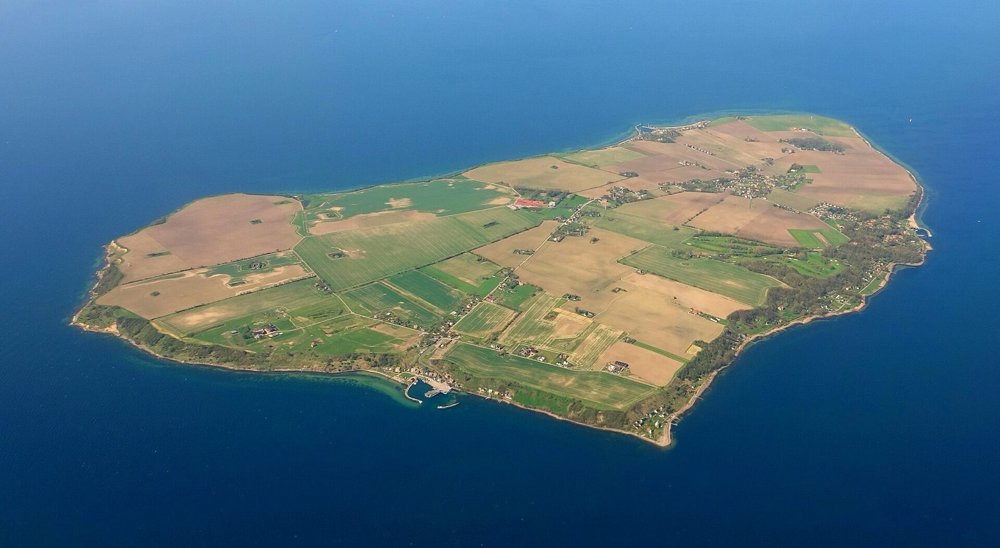
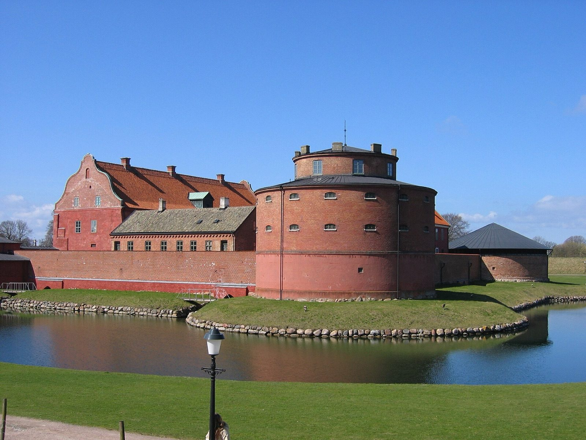
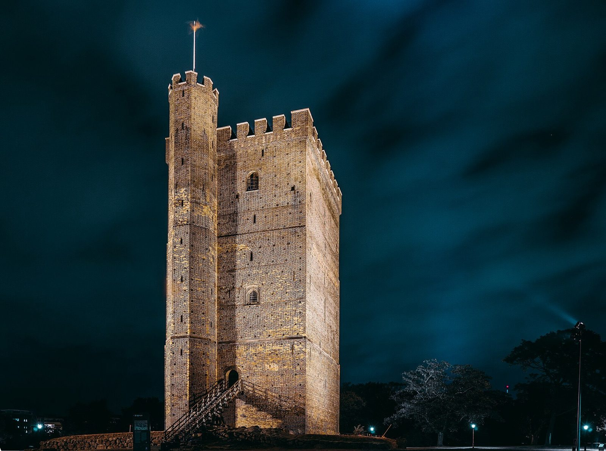
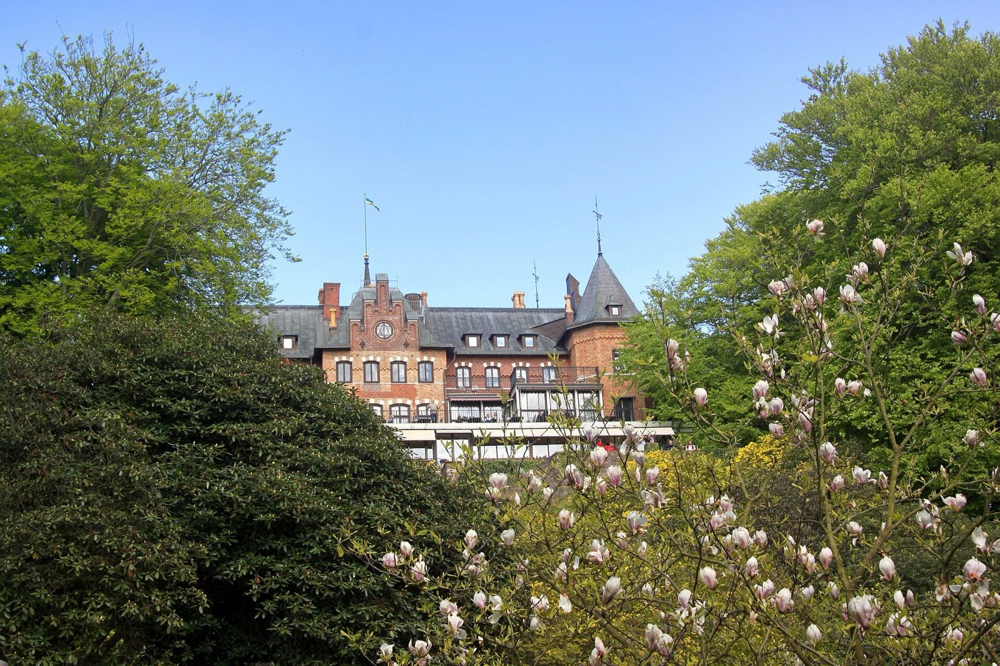
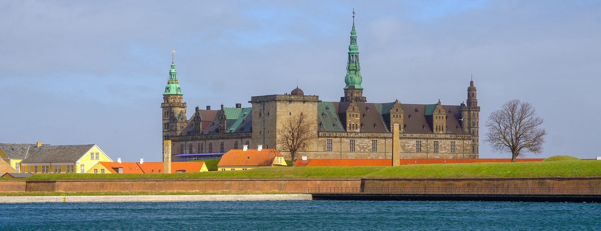
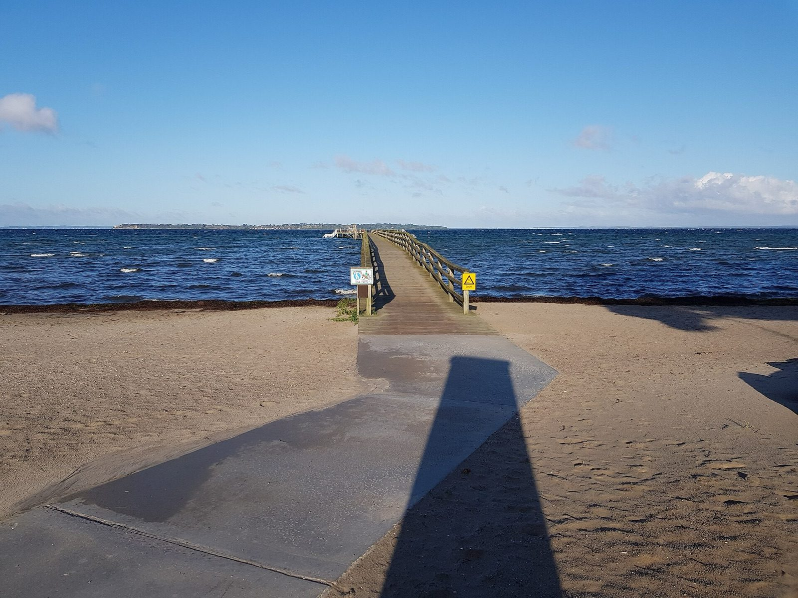

Ven
approx. 10 km to the boat
Take the boat from Landskrona harbour and cycle around the island. The Tycho Brahe museum, the whisky distillery and cliffs down to the sound. Read more about Ven
The area
From the farm you can reach islands, castles, beaches and two cities in a quarter of an hour. Here are our favourites.

approx. 10 km to the boat
Take the boat from Landskrona harbour and cycle around the island. The Tycho Brahe museum, the whisky distillery and cliffs down to the sound. Read more about Ven

approx. 9 km
One of the best-preserved moated fortresses in the Nordic countries, with allotment gardens and cafés all around.

approx. 18 km
Stroll along the water, climb up Kärnan and eat at Norra hamnen.

approx. 22 km
A royal summer palace with one of Europe's finest rhododendron parks.

20 min by ferry
Hamlet's castle on the other side of the sound. The ferry leaves from Helsingborg several times an hour.

approx. 12 km
A bathing spot, fishing village and long walks by the Øresund north of Landskrona.